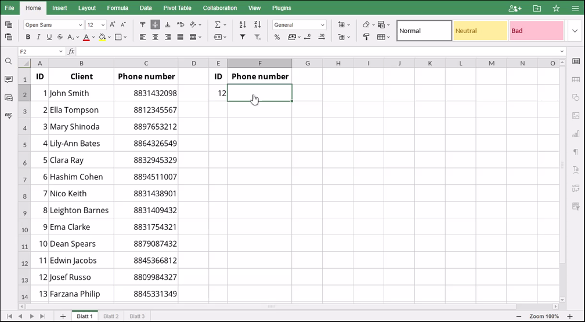

HLOOKUP Funkcija
Funkcija HLOOKUP je jedna od funkcija za pretragu i referencu. Koristi se za horizontalnu pretragu vrednosti u gornjem redu tabele ili niza i vraća vrednost u istoj koloni na osnovu navedenog broja reda.
Sinaksa
HLOOKUP(pretrazi_vrednost, tabela_niz, broj_indexa_reda, [opseg_pretrage])
Funkcija HLOOKUP ima sledeće argumente:
| Argument | Opis |
|---|---|
| pretrazi_vrednost | Vrednost koju tražite. |
| tabela_niz | Dva ili više redova koji sadrže podatke, sortirane u rastućem redosledu. |
| broj_indexa_reda | Broj reda u istoj koloni tabela_niz, numerička vrednost veća ili jednaka 1, ali manja od broja redova u tabela_niz. |
| opseg_pretrage | Opcioni argument. Logička vrednost: TRUE ili FALSE. Unesite FALSE za tačno podudaranje. Unesite TRUE za približno podudaranje. U tom slučaju, ako ne postoji vrednost koja tačno odgovara pretrazi_vrednost, funkcija bira najveću vrednost manju od pretrazi_vrednost. Ako je argument izostavljen, funkcija vrši približno podudaranje. |
Napomene
Ako je opseg_pretrage postavljen na FALSE, ali nije pronađeno tačno podudaranje, funkcija vraća grešku #N/A.
Kako primeniti funkciju HLOOKUP.
Primeri
Slika ispod prikazuje rezultat koji vraća funkcija HLOOKUP.
